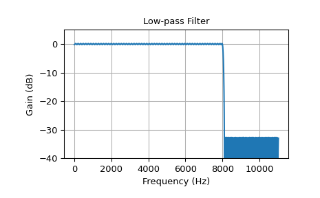
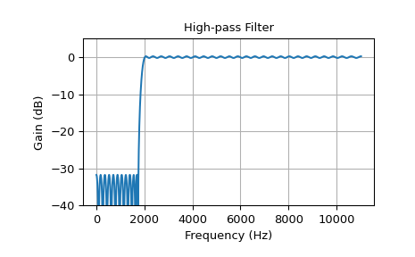
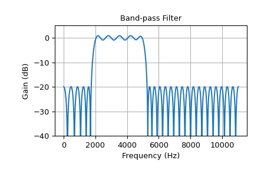

Calculate the minimax optimal filter using the Remez exchange algorithm.
Calculate the filter-coefficients for the finite impulse response
(FIR) filter whose transfer function minimizes the maximum error
between the desired gain and the realized gain in the specified
frequency bands using the Remez exchange algorithm.
Parameters:
numtapsint
The desired number of taps in the filter. The number of taps is
the number of terms in the filter, or the filter order plus one.
bandsarray_like
A monotonic sequence containing the band edges.
All elements must be non-negative and less than half the sampling
frequency as given by fs.
desiredarray_like
A sequence half the size of bands containing the desired gain
in each of the specified bands.
weightarray_like, optional
A relative weighting to give to each band region. The length of
weight has to be half the length of bands.
Hzscalar, optional, deprecated
The sampling frequency in Hz. Default is 1.
Deprecated since version 1.0.0: remez keyword argument Hz is deprecated in favour of fs and
will be removed in SciPy 1.12.0.
J. H. McClellan and T. W. Parks, “A unified approach to the
design of optimum FIR linear phase digital filters”,
IEEE Trans. Circuit Theory, vol. CT-20, pp. 697-701, 1973.
[2]
J. H. McClellan, T. W. Parks and L. R. Rabiner, “A Computer
Program for Designing Optimum FIR Linear Phase Digital
Filters”, IEEE Trans. Audio Electroacoust., vol. AU-21,
pp. 506-525, 1973.
Examples
In these examples, remez is used to design low-pass, high-pass,
band-pass and band-stop filters. The parameters that define each filter
are the filter order, the band boundaries, the transition widths of the
boundaries, the desired gains in each band, and the sampling frequency.
We’ll use a sample frequency of 22050 Hz in all the examples. In each
example, the desired gain in each band is either 0 (for a stop band)
or 1 (for a pass band).
freqz is used to compute the frequency response of each filter, and
the utility function plot_response defined below is used to plot
the response.
>>> defplot_response(w,h,title):... "Utility function to plot response functions"... fig=plt.figure()... ax=fig.add_subplot(111)... ax.plot(w,20*np.log10(np.abs(h)))... ax.set_ylim(-40,5)... ax.grid(True)... ax.set_xlabel('Frequency (Hz)')... ax.set_ylabel('Gain (dB)')... ax.set_title(title)
The first example is a low-pass filter, with cutoff frequency 8 kHz.
The filter length is 325, and the transition width from pass to stop
is 100 Hz.
>>> cutoff=8000.0# Desired cutoff frequency, Hz>>> trans_width=100# Width of transition from pass to stop, Hz>>> numtaps=325# Size of the FIR filter.>>> taps=signal.remez(numtaps,[0,cutoff,cutoff+trans_width,0.5*fs],... [1,0],fs=fs)>>> w,h=signal.freqz(taps,[1],worN=2000,fs=fs)>>> plot_response(w,h,"Low-pass Filter")>>> plt.show()

This example shows a high-pass filter:
>>> cutoff=2000.0# Desired cutoff frequency, Hz>>> trans_width=250# Width of transition from pass to stop, Hz>>> numtaps=125# Size of the FIR filter.>>> taps=signal.remez(numtaps,[0,cutoff-trans_width,cutoff,0.5*fs],... [0,1],fs=fs)>>> w,h=signal.freqz(taps,[1],worN=2000,fs=fs)>>> plot_response(w,h,"High-pass Filter")>>> plt.show()

This example shows a band-pass filter with a pass-band from 2 kHz to
5 kHz. The transition width is 260 Hz and the length of the filter
is 63, which is smaller than in the other examples:
>>> band=[2000,5000]# Desired pass band, Hz>>> trans_width=260# Width of transition from pass to stop, Hz>>> numtaps=63# Size of the FIR filter.>>> edges=[0,band[0]-trans_width,band[0],band[1],... band[1]+trans_width,0.5*fs]>>> taps=signal.remez(numtaps,edges,[0,1,0],fs=fs)>>> w,h=signal.freqz(taps,[1],worN=2000,fs=fs)>>> plot_response(w,h,"Band-pass Filter")>>> plt.show()

The low order leads to higher ripple and less steep transitions.
The next example shows a band-stop filter.
>>> band=[6000,8000]# Desired stop band, Hz>>> trans_width=200# Width of transition from pass to stop, Hz>>> numtaps=175# Size of the FIR filter.>>> edges=[0,band[0]-trans_width,band[0],band[1],... band[1]+trans_width,0.5*fs]>>> taps=signal.remez(numtaps,edges,[1,0,1],fs=fs)>>> w,h=signal.freqz(taps,[1],worN=2000,fs=fs)>>> plot_response(w,h,"Band-stop Filter")>>> plt.show()